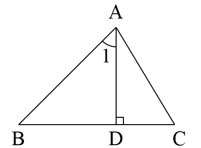
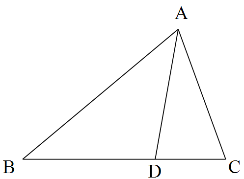

三条线段首尾相连组成
判断能否构成三角形
| 概念 | 定义/性质 | 示例/符号 |
|---|---|---|
| 三角形 | 三条线段首尾顺次连结 | $\triangle ABC$ |
| 内角 | 每两条边所组成的角 | $\angle A,\angle B,\angle C$ |
| 外角 | 内角的一边与另一边的反向延长线组成的角 | $\angle ACD$ |
| 中线 | 顶点与对边中点的线段 | 三条中线交于一点 |
| 角平分线 | 内角平分线与对边的线段 | 三条角平分线交于一点 |
| 高 | 顶点到对边的垂线段 | 三条高（或延长线）交于一点 |
| 锐角三角形 | 三个内角均为锐角 | $\angle A,\angle B,\angle C \lt 90^\circ$ |
| 直角三角形 | 有一个内角为直角 | $\angle C = 90^\circ$ |
| 钝角三角形 | 有一个内角为钝角 | $\angle C \gt 90^\circ$ |
| 等腰三角形 | 两条边相等 | $AB=AC$ |
| 等边三角形 | 三边都相等 | $AB=BC=CA$ |
| 三角形内角和 | 等于 $180^\circ$ | $\angle A+\angle B+\angle C=180^\circ$ |
| 三角形外角性质 | 等于不相邻两内角和 | $\angle ACD = \angle A+\angle B$ |
| 三角形外角和 | 等于 $360^\circ$ | $\angle 1+\angle 2+\angle 3 = 360^\circ$ |
| 三边关系 | 任意两边之和大于第三边 | $a+b>c,\ a+c>b,\ b+c>a$ |
| 多边形内角和 | $(n-2)\cdot180^\circ$ | $n$ 边形内角和 |
| 多边形外角和 | 恒为 $360^\circ$ | 与边数无关 |
| 密铺条件 | 围绕一点的内角和为 $360^\circ$ | 正三角形、正方形、正六边形等 |
例1 在 $\triangle ABC$ 中，$AD$ 是中线，$AE$ 是角平分线，$AF$ 是高。
(1) 若 $AB=AC$，$\angle BAC=80^\circ$，求 $\angle BAD$ 的度数；
(2) 若 $AE$ 平分 $\angle BAC$，$\angle BAC=70^\circ$，求 $\angle BAE$ 的度数。
(1) $\because AB=AC$，$\triangle ABC$ 是等腰三角形，且 $AD$ 是中线，根据等腰三角形“三线合一”，$AD$ 也是顶角平分线。
$\therefore \angle BAD = \frac{1}{2} \angle BAC = 40^\circ$。
(2) $\because AE$ 平分 $\angle BAC$，$\therefore \angle BAE = \frac{1}{2} \angle BAC = 35^\circ$。
例2 如图，$AD$ 是 $\triangle ABC$ 的边 $BC$ 上的高，$\angle 1 = 45^\circ$，$\angle C = 65^\circ$。求 $\angle BAC$ 的度数。

例3 如图，$D$ 是 $\triangle ABC$ 的边 $BC$ 上一点，$\angle B = \angle BAD$，$\angle ADC = 80^\circ$，$\angle BAC = 70^\circ$。求 $\angle B$ 和 $\angle C$ 的度数。

例4 已知三角形三边长分别为 $3$，$4$，$x$，求 $x$ 的取值范围。
根据三角形三边关系：$4-3 < x < 4+3$，即 $1 < x < 7$。
例5 已知一个多边形的内角和是外角和的 $3$ 倍，求这个多边形的边数。
设边数为 $n$，则内角和为 $(n-2)\cdot180^\circ$，外角和为 $360^\circ$。
由题意得 $(n-2)\cdot180 = 3\times 360$，即 $n-2 = 6$，$n=8$。
所以这个多边形是八边形。
例6 用正三角形和正六边形组合能否铺满地面？若能，请说明理由；若不能，请说明需要怎样的组合。
正三角形内角 $60^\circ$，正六边形内角 $120^\circ$。设一个顶点周围有 $x$ 个正三角形和 $y$ 个正六边形，则
$60x + 120y = 360$，即 $x + 2y = 6$。
非负整数解有 $(6,0)$、$(4,1)$、$(2,2)$、$(0,3)$。所以可以铺满，例如 $4$ 个正三角形和 $1$ 个正六边形。
在探索多边形内角和时，我们通过添加对角线将多边形分割成若干个三角形，从而将未知的多边形内角和问题转化为已知的三角形内角和问题。这种“转化”思想是数学中非常重要的方法。
例如，从一个顶点出发，$n$ 边形可以被分成 $(n-2)$ 个三角形，因此内角和为 $(n-2)\times180^\circ$。我们还可以在多边形内部取一点，与各顶点相连，得到 $n$ 个三角形，再减去一个周角 $360^\circ$，同样得到内角和公式。
从三角形到四边形、五边形……，我们通过归纳推理发现了多边形内角和的规律，这体现了从特殊到一般的数学思想。无论是转化还是归纳，都帮助我们更深刻地理解几何图形的内在联系。
1. 在 $\triangle ABC$ 中，$\angle A : \angle B : \angle C = 1:2:3$，求 $\triangle ABC$ 各内角的度数，并判断三角形的形状。
设 $\angle A=x$，则 $\angle B=2x$，$\angle C=3x$，由 $x+2x+3x=180^\circ$ 得 $x=30^\circ$。
所以 $\angle A=30^\circ$，$\angle B=60^\circ$，$\angle C=90^\circ$，为直角三角形。
2. 等腰三角形的一边长为 $5$，另一边长为 $8$，求它的周长。
若腰长为 $5$，底为 $8$，则周长为 $5+5+8=18$；若腰长为 $8$，底为 $5$，则周长为 $8+8+5=21$。两者均满足三角形三边关系，所以周长为 $18$ 或 $21$。
3. 一个多边形的内角和比四边形的内角和多 $540^\circ$，求这个多边形的边数。
四边形内角和 $360^\circ$，则这个多边形内角和为 $360+540=900^\circ$。
由 $(n-2)\cdot180=900$ 得 $n-2=5$，$n=7$。
所以是七边形。
4. 用正五边形和正十边形能否铺满地面？若能，请给出方案；若不能，请说明理由。
正五边形内角 $108^\circ$，正十边形内角 $144^\circ$。设 $x$ 个正五边形和 $y$ 个正十边形，则 $108x+144y=360$。
化简为 $3x+4y=10$，非负整数解有 $(2,1)$（$3\times2+4\times1=10$）。所以可以铺满：两个正五边形和一个正十边形。
分类思想： 按角、按边对三角形分类。
转化思想： 将多边形内角和转化为三角形内角和问题。
数形结合： 利用图形直观理解角度关系。
建模思想： 用方程解决多边形内角和、密铺问题。
✨ 三角形虽简单，却是几何大厦的基石 ✨